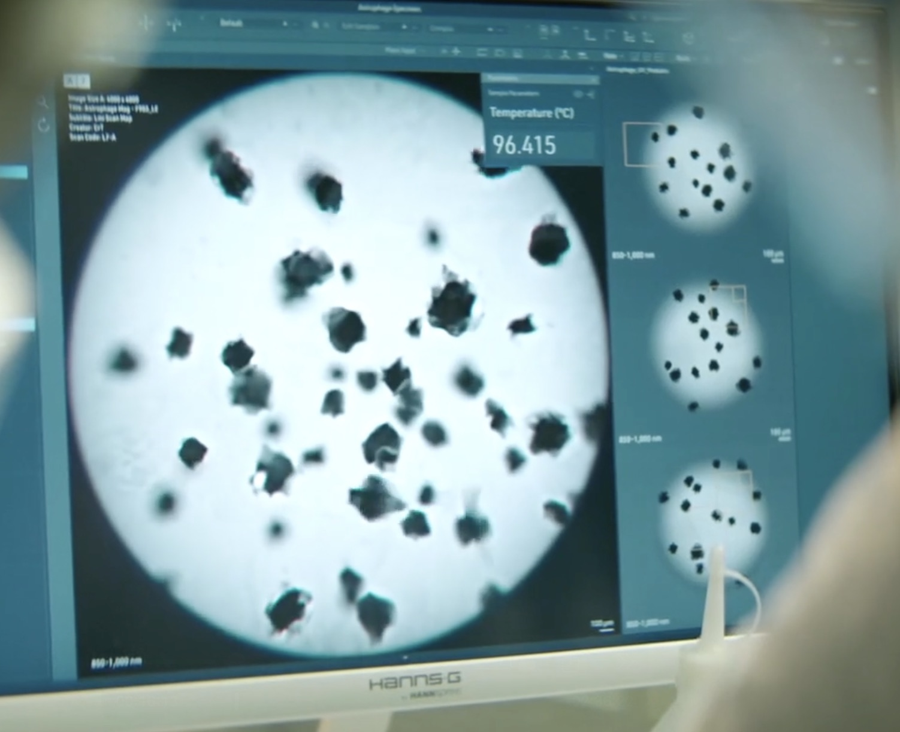

Astrophage is an alien microbe, which acts similar to an interstellar mold or algae. It grows upon the surface of stars, decreasing the brightness and leading to a dramatic decrease in temperature of any celestial bodies in orbit of the affected star. As it's etymology suggests, Astro meaning "Star" and Phage meaning "devour". This leads to a mass extinction on any planets with life in the affected star's system. It can travel from star to star, drawn by the light and heat of each star.

The Petrova Line, named after its discoverer Irina Petrova, is a streak of infrared light from the Sun to Venus. ArcLight sent a probe to the Petrova line to investigate the findings. They discovered "dots" along the line that appeared to dim the sun.